*This article was created with AI (ChatGPT 5.1 Thinking) and partly added to by me 😆
I ate here in February 2025 😄 As you drive up the winding road toward the mountains of Izumi in Motobu Town, the surroundings are nothing but forest, to the point where you get a little nervous wondering, "Is there really a shop up ahead…?" 🌿 Along the way the Taiwan cherry blossoms happened to be in bloom, deep pink puffs floating up here and there, a view that made me want to stop the car and just gaze at it 🌸 Appearing quietly in the middle of that forest is the Okinawa soba shop I visited this time, "Mori no Ie".
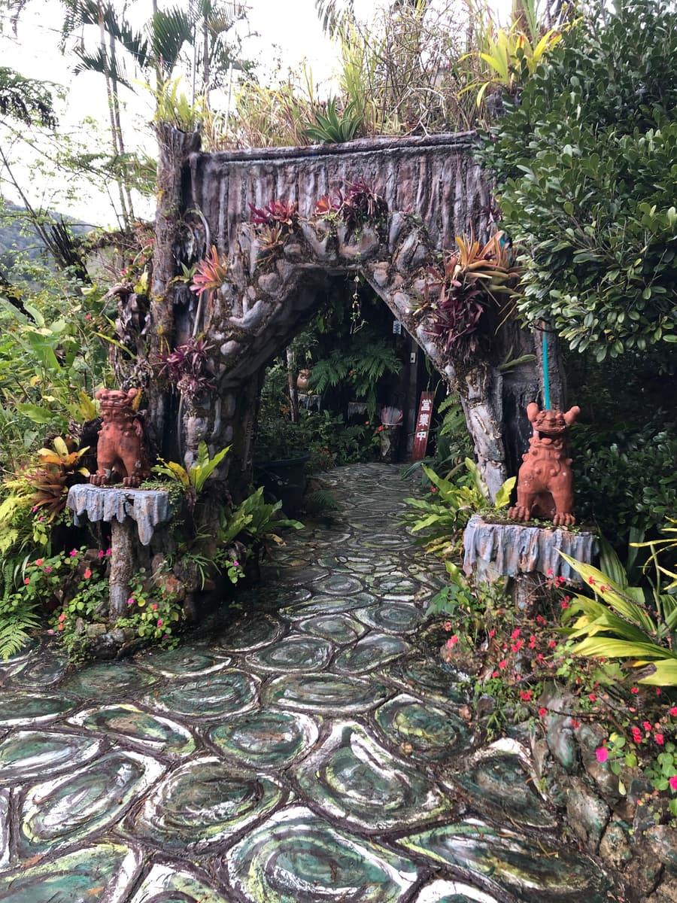
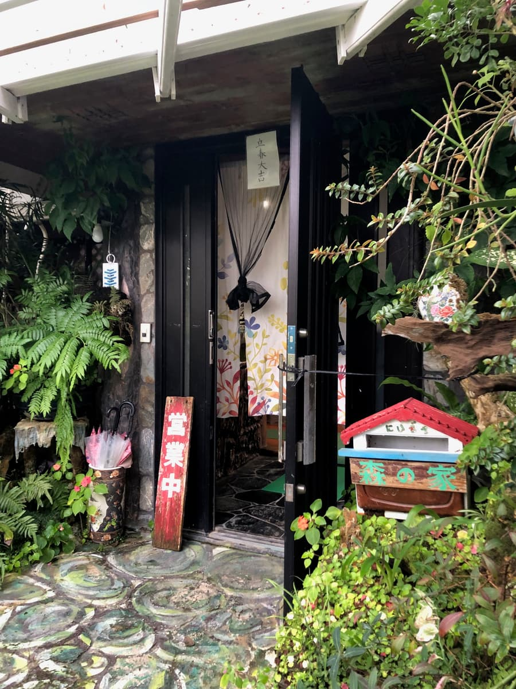
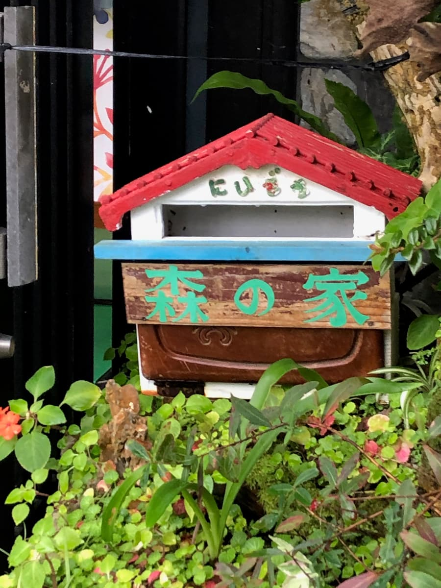
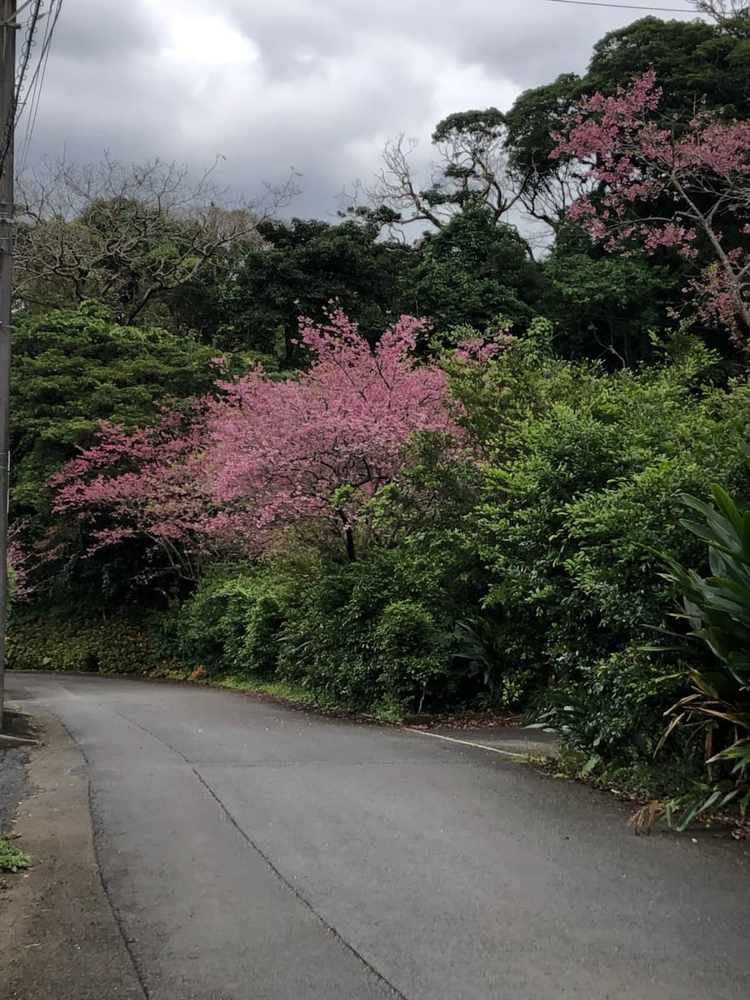
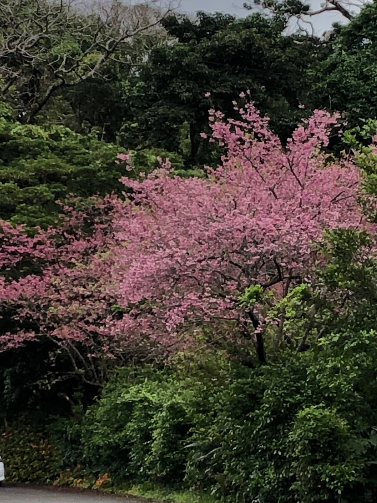
Walking toward the shop, the first thing that catches your eye is an arched gate guarded by shisa. The stone paving underfoot has a swirling pattern, and it somehow feels like you've wandered into a secret garden 🙂 The surroundings are full of trees and plants, truly a "house in the forest" just like the name. Next to the entrance sits a colorful mailbox with a very handmade feel, and it was so cute it got me excited 📮
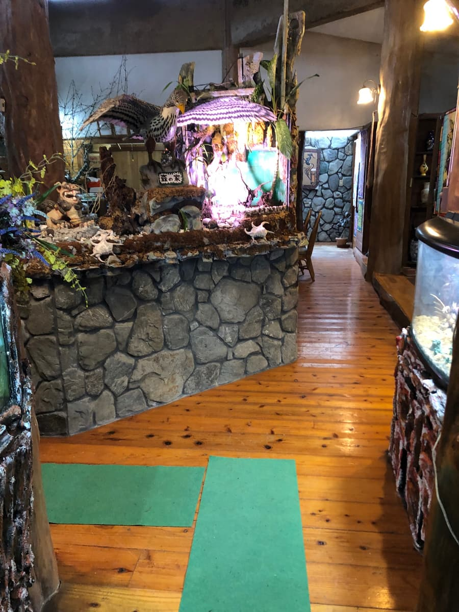
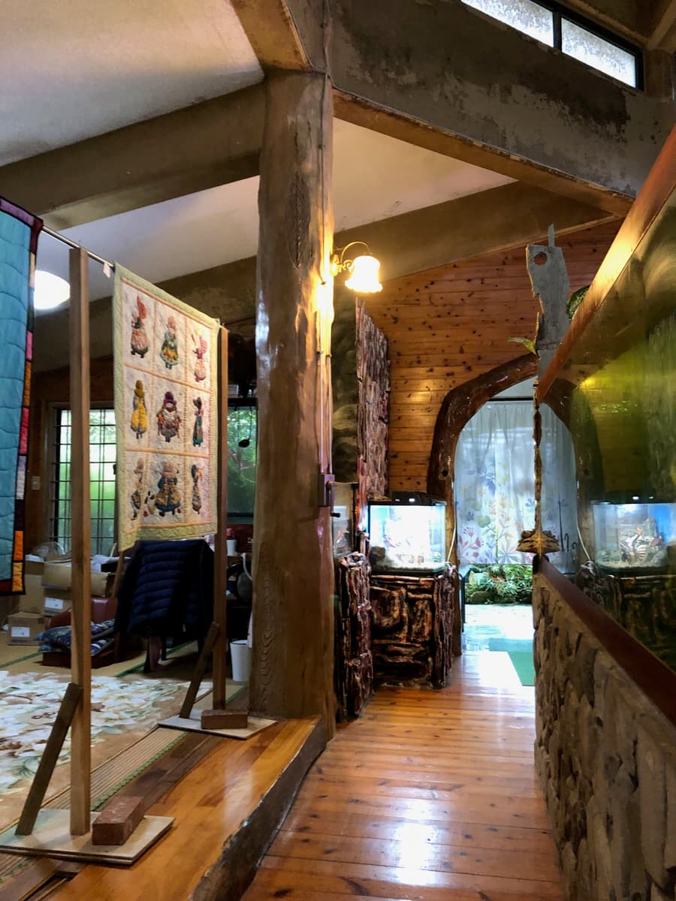
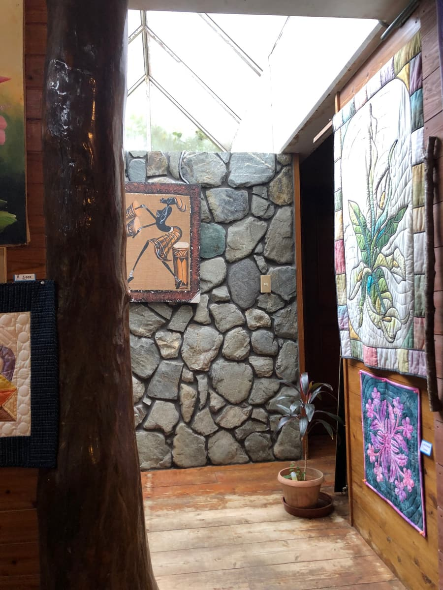
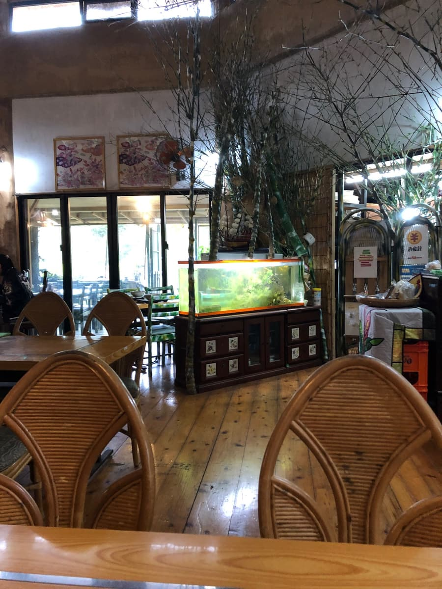
Stepping inside, there's a glossy wooden floor lined with rattan chairs and wooden tables. Near the ceiling there's a display that makes use of branches just as they are, and in the center there's even a large aquarium. It's a strangely calming space, like a slightly retro coffee shop, a mountain hut and an art space all mixed together.
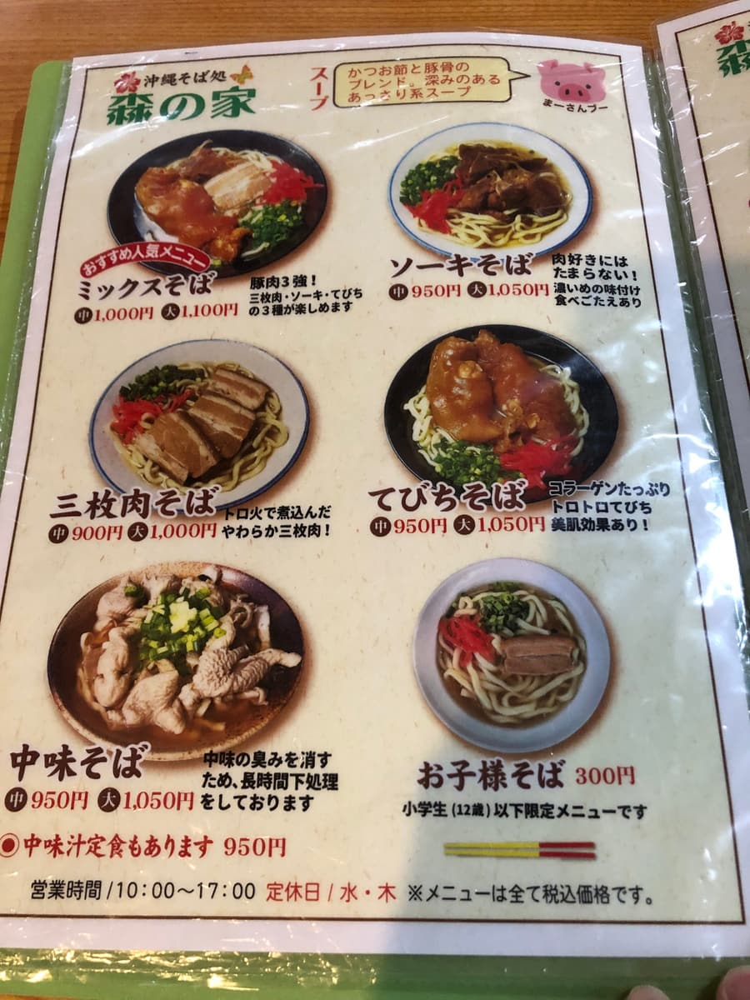
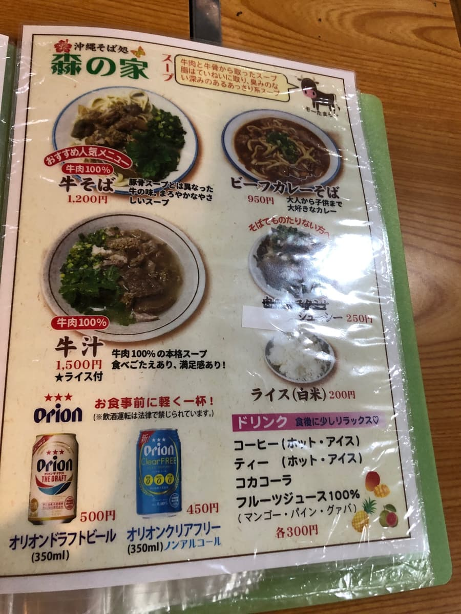
Opening the menu, in addition to the standards like soki soba, braised pork belly (sanmai-niku) soba and pork offal (nakami) soba, there were unusual ones like beef soba and even beef curry soba, which surprised me a bit. There's also a kids' soba, so it seems easy to come with the family. For drinks, they have coffee, tea, fruit juice, and Orion Beer properly on the lineup too 🍺 I hesitated over a lot of things, but this time I ordered the "Mix Soba", which was labeled a "Recommended Popular Menu Item". It's what you'd call an everything-on-top bowl.
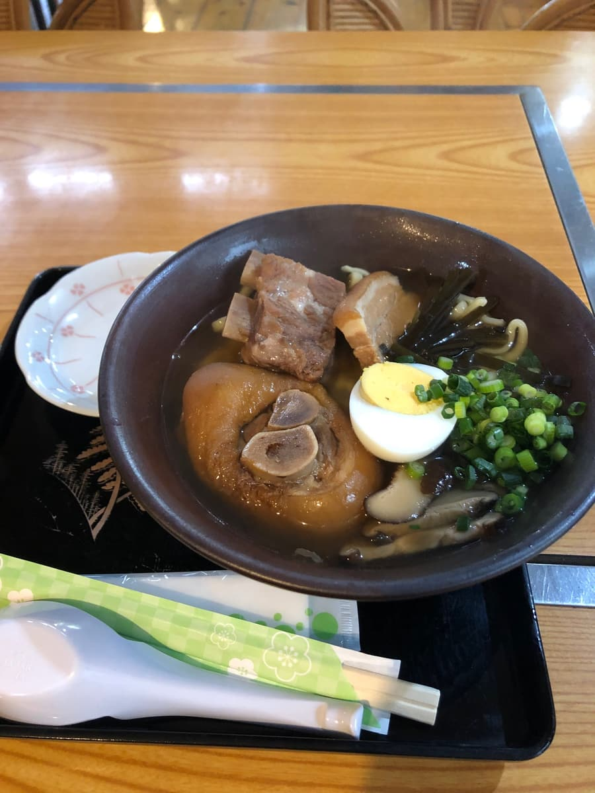
After waiting a little while, the Mix Soba arrived generously piled in a large bowl. Pig's feet (tebichi), pork spare ribs (soki), braised pork belly (sanmai-niku), a boiled egg, shiitake mushrooms, kelp, green onions… there was so much topping you could barely see the noodles, and the moment I saw it I let out an "Ohhh!" 😆 First, a sip of the broth. It seems to be a blended stock of bonito and pork bone, and the bonito broth really comes through. The shiitake stock is also strong, and it reminded me of the flavor at "Papa Subu" in Ginowan City.
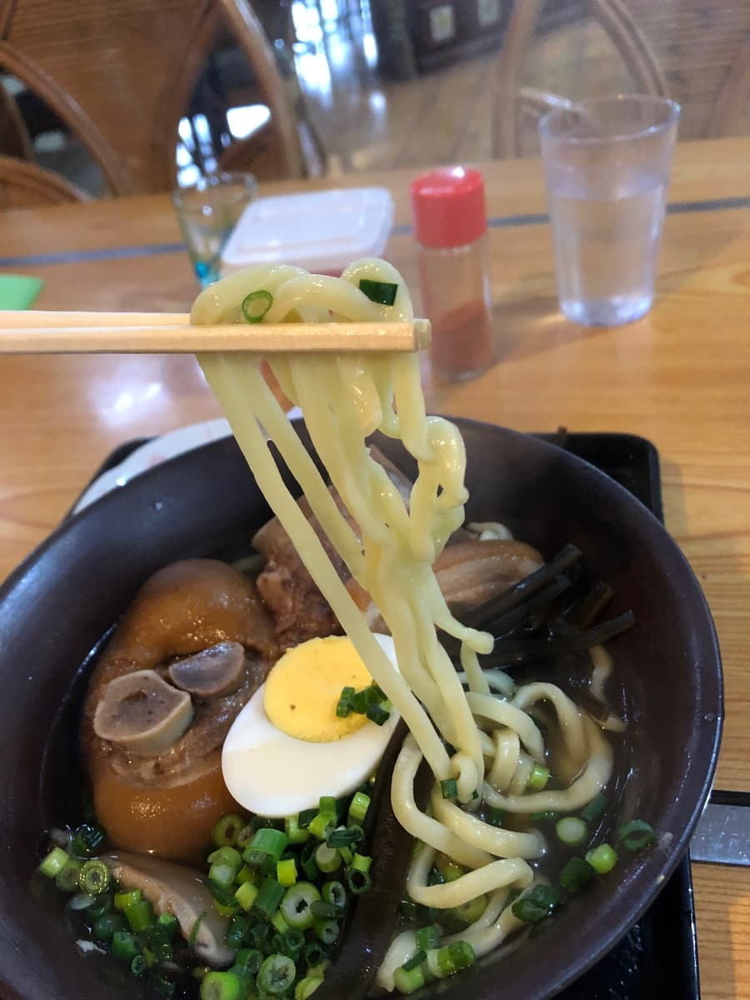
The noodles are medium-thick and straight. The texture is not too soft, but not rock-hard firm either, right down the middle.
The meats have plenty of presence, just as they look. The pig's feet (tebichi) were jiggly, and the fat was melt-in-your-mouth ✨ The seasoning on the pork spare ribs (soki) and braised pork belly (sanmai-niku) was light across the board. A sinewy texture remains here and there.
The boiled egg topping might be a point unique to this place, too. Rather than a seasoned egg, it's an old-fashioned, firmly hard-boiled egg, with a half plopped right on top, a style you don't see much at other shops, so it felt a little fresh 🥚
The direction of the flavor is, if anything, on the ordinary side. It's well balanced and easy to eat, but I didn't really feel a strong personality or impact like "you can only eat this here!", that's my impression 🤔 But in exchange, the pairing with the location is outstanding. Outside the window, green spreads out everywhere, and when you step outside after eating, time flows leisurely, with only the sound of birds and the wind to be heard.
Rating (9/15): It's ordinary. I think it's the perfect shop for people who want to step a little away from the busy areas in the heart of the tourist spots and slurp Okinawa soba at a relaxed pace in the forest. Dropping by on a drive in cherry blossom season, or deliberately going on a rainy day to soak in this moist atmosphere: enjoying it together with the scenery may be the tastiest way to enjoy "Mori no Ie" 🚗🌳
Noodles: ★★★☆☆（3）
Soup: ★★★☆☆（3）
Toppings: ★★★☆☆（3）